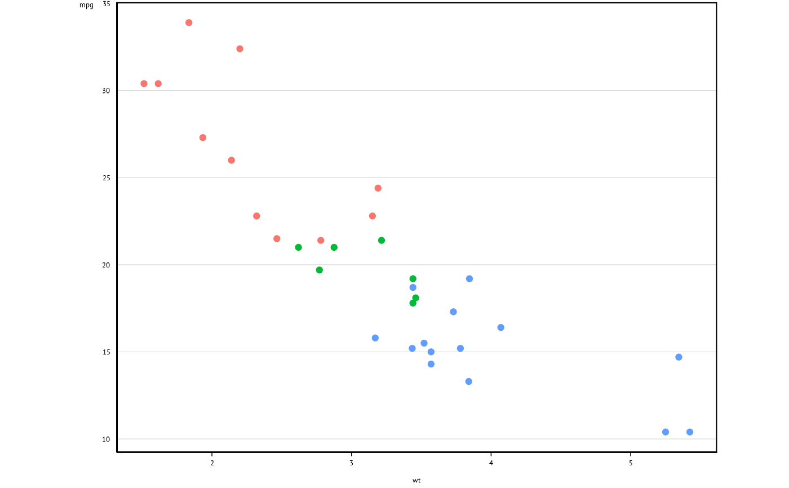

Applies the e61 theme to ggplot graphs and provides arguments to adjust graph
appearance. If you are looking to change the appearance of titles or labels,
check the arguments in labs_e61, which are probably
what you are looking for.
Usage
theme_e61(
y_top = TRUE,
adj = -12,
fix_left = 0,
legend = c("none", "bottom", "top", "left", "right"),
legend_title = FALSE,
aspect_ratio = 0.75,
panel_borders = TRUE,
background = "white",
base_size = 10,
base_family = "ArialMT",
base_line_size = points_to_mm(0.75),
base_rect_size = points_to_mm(1)
)Arguments
- y_top
Defaults to TRUE. Puts the y-axis title at the top. If you change this argument you also need to change the argument with the same name in
scale_y_continuous_e61.- adj
Either a single numeric to adjust left and right axis titles simultaneously or a vector of 2 numerics to adjust each axis title separately. More negative values move the text closer to the graph panel. Defaults to -12 which seems to work well for y-axis with 1-3 character-wide values.
- fix_left
Optional. Sometimes if the value of the
adjargument is too negative, the margins on the left side of the graph start to cut off some of the text. Provide a small positive value (5?) to correct this.- legend
Character. Legend position, use "none" (default) to hide the legend.
- legend_title
Logical. Include Legend title? Defaults to FALSE.
- aspect_ratio
Numeric. Sets the aspect ratio of the graph panel.
- panel_borders
Logical. Show panel borders? Defaults to TRUE.
- background
Character. Options are "white" (default) or "grey".
- base_size
Numeric. Chart font size. Default is 10.
- base_family
Character. Chart font family. Default is Arial.
- base_line_size
Numeric. Default line width.
- base_rect_size
Numeric. Default rect width.
Details
scale_y_continuous_e61() should be used in conjunction with this
function to ensure that theming and axes are applied correctly.
Examples
ggplot(data = mtcars, aes(x = wt, y = mpg, col = factor(cyl))) +
geom_point() +
theme_e61() +
scale_colour_e61(n = 3)
